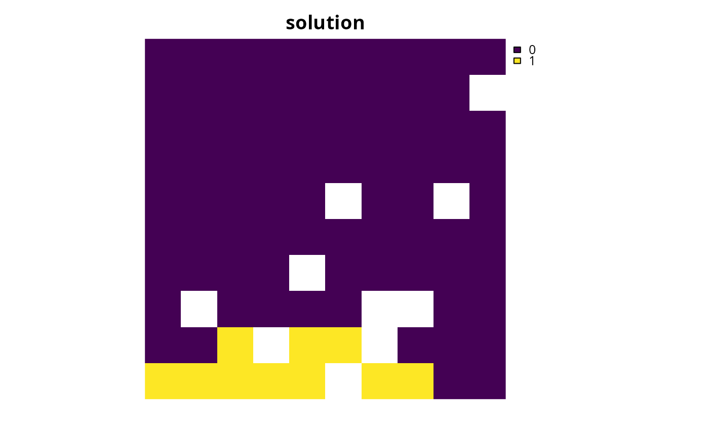
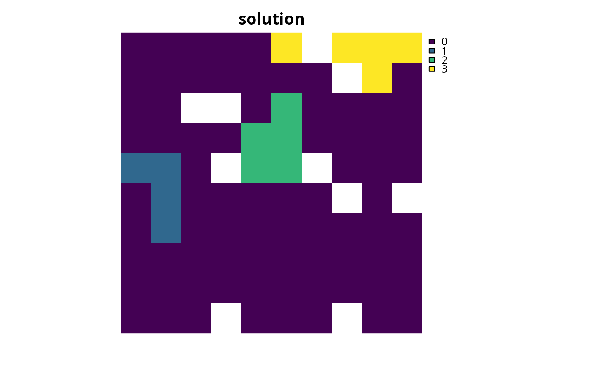

Set targets for a conservation planning problem by manually
specifying all the required information for each target. This function
is useful because it can be used to customize all aspects of a target. For
most cases, targets can be specified using the
link{add_absolute_targets} and add_relative_targets
functions. However, this function can be used to (i) mix absolute and
relative targets for different features and zones, (ii) set targets that
pertain to the allocations of planning units in multiple zones, and (iii)
set targets that require different senses (e.g. targets which specify the
solution should not exceed a certain quantity using "<=" values).
# S4 method for ConservationProblem,data.frame add_manual_targets(x, targets) # S4 method for ConservationProblem,tbl_df add_manual_targets(x, targets)
Arguments
| x |
|
|---|---|
| targets |
|
Value
ConservationProblem-class object with the targets added
to it.
Details
Targets are used to specify the minimum amount or proportion of a
feature's distribution that needs to be protected. Most conservation
planning problems require targets with the exception of the maximum cover
(see add_max_cover_objective) and maximum utility
(see add_max_utility_objective) problems. Attempting to solve
problems with objectives that require targets without specifying targets
will throw an error.
The targets argument should contain the following fields (columns):
"feature"charactername of features in argument tox."zone"charactername of zones in argument tox. This field (column) is optional for arguments toxthat do not contain multiple zones."type"characterdescribing the type of target. Acceptable values include"absolute"and"relative". These values correspond toadd_absolute_targets, andadd_relative_targetsrespectively."sense"charactersense of the target. Acceptable values include:">=","<=", and"=". This field (column) is optional and if it is missing then target senses will default to">="values."target"numerictarget threshold.
See also
Examples
# set seed for reproducibility set.seed(500) # load data data(sim_pu_raster, sim_features, sim_pu_zones_stack, sim_features_zones) # create problem with 10 % relative targets p1 <- problem(sim_pu_raster, sim_features) %>% add_min_set_objective() %>% add_relative_targets(0.1) %>% add_binary_decisions()#> Optimize a model with 5 rows, 90 columns and 450 nonzeros #> Variable types: 0 continuous, 90 integer (90 binary) #> Coefficient statistics: #> Matrix range [2e-01, 9e-01] #> Objective range [2e+02, 2e+02] #> Bounds range [1e+00, 1e+00] #> RHS range [3e+00, 8e+00] #> Found heuristic solution: objective 2337.9617505 #> Presolve time: 0.00s #> Presolved: 5 rows, 90 columns, 450 nonzeros #> Variable types: 0 continuous, 90 integer (90 binary) #> Presolved: 5 rows, 90 columns, 450 nonzeros #> #> #> Root relaxation: objective 1.931582e+03, 12 iterations, 0.00 seconds #> #> Nodes | Current Node | Objective Bounds | Work #> Expl Unexpl | Obj Depth IntInf | Incumbent BestBd Gap | It/Node Time #> #> 0 0 1931.58191 0 4 2337.96175 1931.58191 17.4% - 0s #> H 0 0 1985.6818841 1931.58191 2.72% - 0s #> #> Explored 1 nodes (12 simplex iterations) in 0.00 seconds #> Thread count was 1 (of 4 available processors) #> #> Solution count 2: 1985.68 2337.96 #> #> Optimal solution found (tolerance 1.00e-01) #> Best objective 1.985681884076e+03, best bound 1.931581908865e+03, gap 2.7245%# create equivalent problem using add_manual_targets p2 <- problem(sim_pu_raster, sim_features) %>% add_min_set_objective() %>% add_manual_targets(data.frame(feature = names(sim_features), type = "relative", sense = ">=", target = 0.1)) %>% add_binary_decisions()#> Optimize a model with 5 rows, 90 columns and 450 nonzeros #> Variable types: 0 continuous, 90 integer (90 binary) #> Coefficient statistics: #> Matrix range [2e-01, 9e-01] #> Objective range [2e+02, 2e+02] #> Bounds range [1e+00, 1e+00] #> RHS range [3e+00, 8e+00] #> Found heuristic solution: objective 2337.9617505 #> Presolve time: 0.00s #> Presolved: 5 rows, 90 columns, 450 nonzeros #> Variable types: 0 continuous, 90 integer (90 binary) #> Presolved: 5 rows, 90 columns, 450 nonzeros #> #> #> Root relaxation: objective 1.931582e+03, 12 iterations, 0.00 seconds #> #> Nodes | Current Node | Objective Bounds | Work #> Expl Unexpl | Obj Depth IntInf | Incumbent BestBd Gap | It/Node Time #> #> 0 0 1931.58191 0 4 2337.96175 1931.58191 17.4% - 0s #> H 0 0 1985.6818841 1931.58191 2.72% - 0s #> #> Explored 1 nodes (12 simplex iterations) in 0.00 seconds #> Thread count was 1 (of 4 available processors) #> #> Solution count 2: 1985.68 2337.96 #> #> Optimal solution found (tolerance 1.00e-01) #> Best objective 1.985681884076e+03, best bound 1.931581908865e+03, gap 2.7245%# create problem with targets set for only a few features p3 <- problem(sim_pu_raster, sim_features) %>% add_min_set_objective() %>% add_manual_targets(data.frame( feature = names(sim_features)[1:3], type = "relative", sense = ">=", target = 0.1)) %>% add_binary_decisions()#> Optimize a model with 3 rows, 90 columns and 270 nonzeros #> Variable types: 0 continuous, 90 integer (90 binary) #> Coefficient statistics: #> Matrix range [2e-01, 9e-01] #> Objective range [2e+02, 2e+02] #> Bounds range [1e+00, 1e+00] #> RHS range [3e+00, 8e+00] #> Found heuristic solution: objective 2337.9617505 #> Presolve time: 0.00s #> Presolved: 3 rows, 90 columns, 270 nonzeros #> Variable types: 0 continuous, 90 integer (90 binary) #> Presolved: 3 rows, 90 columns, 270 nonzeros #> #> #> Root relaxation: objective 1.890262e+03, 10 iterations, 0.00 seconds #> #> Nodes | Current Node | Objective Bounds | Work #> Expl Unexpl | Obj Depth IntInf | Incumbent BestBd Gap | It/Node Time #> #> 0 0 1890.26177 0 3 2337.96175 1890.26177 19.1% - 0s #> H 0 0 1976.2167483 1890.26177 4.35% - 0s #> #> Explored 1 nodes (10 simplex iterations) in 0.00 seconds #> Thread count was 1 (of 4 available processors) #> #> Solution count 2: 1976.22 2337.96 #> #> Optimal solution found (tolerance 1.00e-01) #> Best objective 1.976216748277e+03, best bound 1.890261766558e+03, gap 4.3495%# create problem that aims to secure at least 10 % of the habitat for one # feature whilst ensuring that the solution does not capture more than # 20 units habitat for different feature # create problem with targets set for only a few features p4 <- problem(sim_pu_raster, sim_features[[1:2]]) %>% add_min_set_objective() %>% add_manual_targets(data.frame( feature = names(sim_features)[1:2], type = "relative", sense = c(">=", "<="), target = c(0.1, 0.2))) %>% add_binary_decisions()#> Optimize a model with 2 rows, 90 columns and 180 nonzeros #> Variable types: 0 continuous, 90 integer (90 binary) #> Coefficient statistics: #> Matrix range [2e-01, 9e-01] #> Objective range [2e+02, 2e+02] #> Bounds range [1e+00, 1e+00] #> RHS range [6e+00, 8e+00] #> Found heuristic solution: objective 2305.4577086 #> Presolve time: 0.00s #> Presolved: 2 rows, 90 columns, 180 nonzeros #> Variable types: 0 continuous, 90 integer (90 binary) #> Presolved: 2 rows, 90 columns, 180 nonzeros #> #> #> Root relaxation: objective 1.792849e+03, 1 iterations, 0.00 seconds #> #> Nodes | Current Node | Objective Bounds | Work #> Expl Unexpl | Obj Depth IntInf | Incumbent BestBd Gap | It/Node Time #> #> 0 0 1792.84895 0 1 2305.45771 1792.84895 22.2% - 0s #> H 0 0 1944.6433096 1792.84895 7.81% - 0s #> #> Explored 1 nodes (1 simplex iterations) in 0.00 seconds #> Thread count was 1 (of 4 available processors) #> #> Solution count 2: 1944.64 2305.46 #> #> Optimal solution found (tolerance 1.00e-01) #> Best objective 1.944643309632e+03, best bound 1.792848946888e+03, gap 7.8058%# create a multi-zone problem that requires a specific amount of each # feature in each zone targets_matrix <- matrix(rpois(15, 1), nrow = 5, ncol = 3) p5 <- problem(sim_pu_zones_stack, sim_features_zones) %>% add_min_set_objective() %>% add_absolute_targets(targets_matrix) %>% add_binary_decisions()#> Optimize a model with 105 rows, 270 columns and 1620 nonzeros #> Variable types: 0 continuous, 270 integer (270 binary) #> Coefficient statistics: #> Matrix range [2e-01, 1e+00] #> Objective range [2e+02, 2e+02] #> Bounds range [1e+00, 1e+00] #> RHS range [1e+00, 3e+00] #> Found heuristic solution: objective 3524.7950998 #> Presolve removed 7 rows and 0 columns #> Presolve time: 0.00s #> Presolved: 98 rows, 270 columns, 990 nonzeros #> Variable types: 0 continuous, 270 integer (270 binary) #> Presolved: 98 rows, 270 columns, 990 nonzeros #> #> #> Root relaxation: objective 2.642776e+03, 9 iterations, 0.00 seconds #> #> Nodes | Current Node | Objective Bounds | Work #> Expl Unexpl | Obj Depth IntInf | Incumbent BestBd Gap | It/Node Time #> #> 0 0 2642.77567 0 5 3524.79510 2642.77567 25.0% - 0s #> H 0 0 2875.8073247 2642.77567 8.10% - 0s #> #> Explored 1 nodes (9 simplex iterations) in 0.00 seconds #> Thread count was 1 (of 4 available processors) #> #> Solution count 2: 2875.81 3524.8 #> #> Optimal solution found (tolerance 1.00e-01) #> Best objective 2.875807324677e+03, best bound 2.642775673413e+03, gap 8.1032%# create equivalent problem using add_manual_targets targets_dataframe <- expand.grid(feature = feature_names(sim_features_zones), zone = zone_names(sim_features_zones), sense = ">=", type = "absolute") targets_dataframe$target <- c(targets_matrix) p6 <- problem(sim_pu_zones_stack, sim_features_zones) %>% add_min_set_objective() %>% add_manual_targets(targets_dataframe) %>% add_binary_decisions()#> Optimize a model with 105 rows, 270 columns and 1620 nonzeros #> Variable types: 0 continuous, 270 integer (270 binary) #> Coefficient statistics: #> Matrix range [2e-01, 1e+00] #> Objective range [2e+02, 2e+02] #> Bounds range [1e+00, 1e+00] #> RHS range [1e+00, 3e+00] #> Found heuristic solution: objective 3524.7950998 #> Presolve removed 7 rows and 0 columns #> Presolve time: 0.00s #> Presolved: 98 rows, 270 columns, 990 nonzeros #> Variable types: 0 continuous, 270 integer (270 binary) #> Presolved: 98 rows, 270 columns, 990 nonzeros #> #> #> Root relaxation: objective 2.642776e+03, 9 iterations, 0.00 seconds #> #> Nodes | Current Node | Objective Bounds | Work #> Expl Unexpl | Obj Depth IntInf | Incumbent BestBd Gap | It/Node Time #> #> 0 0 2642.77567 0 5 3524.79510 2642.77567 25.0% - 0s #> H 0 0 2875.8073247 2642.77567 8.10% - 0s #> #> Explored 1 nodes (9 simplex iterations) in 0.00 seconds #> Thread count was 1 (of 4 available processors) #> #> Solution count 2: 2875.81 3524.8 #> #> Optimal solution found (tolerance 1.00e-01) #> Best objective 2.875807324677e+03, best bound 2.642775673413e+03, gap 8.1032%# create a problem that requires a total of 20 units of habitat to be # captured for two species. This can be achieved through representing # habitat in two zones. The first zone represents a full restoration of the # habitat and a second zone represents a partial restoration of the habitat # Thus only half of the benefit that would have been gained from the full # restoration is obtained when planning units are allocated a partial # restoration # create data spp_zone1 <- as.list(sim_features_zones)[[1]][[1:2]] spp_zone2 <- spp_zone1 * 0.5 costs <- sim_pu_zones_stack[[1:2]] # create targets targets_dataframe2 <- tibble::tibble( feature = names(spp_zone1), zone = list(c("z1", "z2"), c("z1", "z2")), sense = c(">=", ">="), type = c("absolute", "absolute"), target = c(20, 20)) # create problem p7 <- problem(costs, zones(spp_zone1, spp_zone2, feature_names = names(spp_zone1), zone_names = c("z1", "z2"))) %>% add_min_set_objective() %>% add_manual_targets(targets_dataframe2) %>% add_binary_decisions()#> Optimize a model with 92 rows, 180 columns and 540 nonzeros #> Variable types: 0 continuous, 180 integer (180 binary) #> Coefficient statistics: #> Matrix range [1e-01, 1e+00] #> Objective range [2e+02, 2e+02] #> Bounds range [1e+00, 1e+00] #> RHS range [1e+00, 2e+01] #> Found heuristic solution: objective 17976.253561 #> Presolve removed 35 rows and 34 columns #> Presolve time: 0.00s #> Presolved: 57 rows, 146 columns, 258 nonzeros #> Found heuristic solution: objective 15717.143264 #> Variable types: 0 continuous, 146 integer (146 binary) #> Presolved: 57 rows, 146 columns, 258 nonzeros #> #> #> Root relaxation: objective 1.238651e+04, 1 iterations, 0.00 seconds #> #> Nodes | Current Node | Objective Bounds | Work #> Expl Unexpl | Obj Depth IntInf | Incumbent BestBd Gap | It/Node Time #> #> 0 0 12386.5146 0 1 15717.1433 12386.5146 21.2% - 0s #> H 0 0 12523.968444 12386.5146 1.10% - 0s #> #> Explored 1 nodes (1 simplex iterations) in 0.00 seconds #> Thread count was 1 (of 4 available processors) #> #> Solution count 3: 12524 15717.1 15997.8 #> #> Optimal solution found (tolerance 1.00e-01) #> Best objective 1.252396844383e+04, best bound 1.238651459270e+04, gap 1.0975%